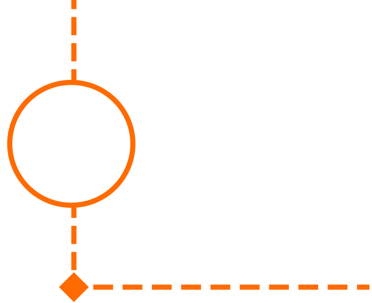
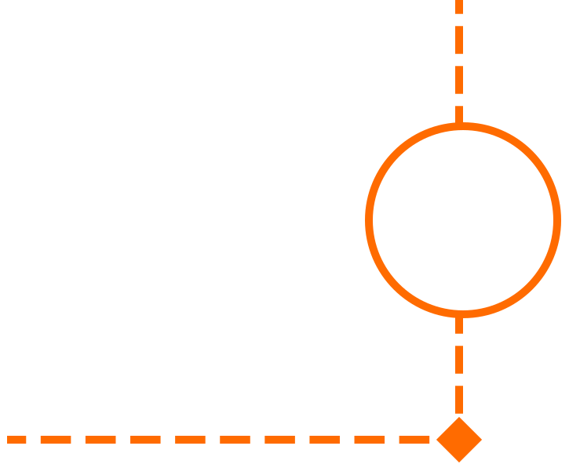

1. Choose your destination
The first step in planning your trip is to decide where you want to go.
Consider your interests, budget, and the amount of time you have
available for travel. If you are on a tight budget, consider travelling
to a destination that is more affordable. If you are interested in
exploring a new culture, consider travelling to a country that is vastly
different from your own.
2. Research your destination
Once you have decided on a destination, it is important to research it
thoroughly. Look up information about the local customs, language,
currency, and weather. Read reviews of hotels, restaurants, and
attractions to get an idea of what to expect. Look for blogs and travel
guides to get insider tips from locals and experienced travelers.

3. Set a budget
Travel can be expensive, so it is important to set a budget before you
start planning your trip. Consider the cost of flights, accommodations,
food, transportation, and activities. Be realistic about what you can
afford, and be prepared to make some sacrifices if necessary.
4. Book your flights and accommodations
Once you have a budget in place, it is time to start booking your
flights and accommodations. Use travel websites and search engines to
find the best deals on flights and hotels. Consider staying in a hostel
or Airbnb to save money on accommodations.
5. Plan your itinerary
When planning your itinerary, be sure to leave some flexibility in your
schedule. You never know what unexpected adventures might come your way.
However, it is also important to have a rough plan in place to ensure
that you make the most of your time in your destination. Make a list of
must-see attractions and activities, and schedule them into your
itinerary.
6. Pack wisely
When packing for your trip, be sure to pack light and only bring
essentials. Consider the weather and the activities you have planned,
and pack accordingly. Be sure to also bring any necessary travel
documents, such as your passport or visa.
7. Stay safe
Safety should always be a top priority when traveling. Be aware of your
surroundings and keep your belongings close at all times. Avoid
traveling alone at night, and stick to well-lit areas. Research any
potential safety concerns in your destination before you go.